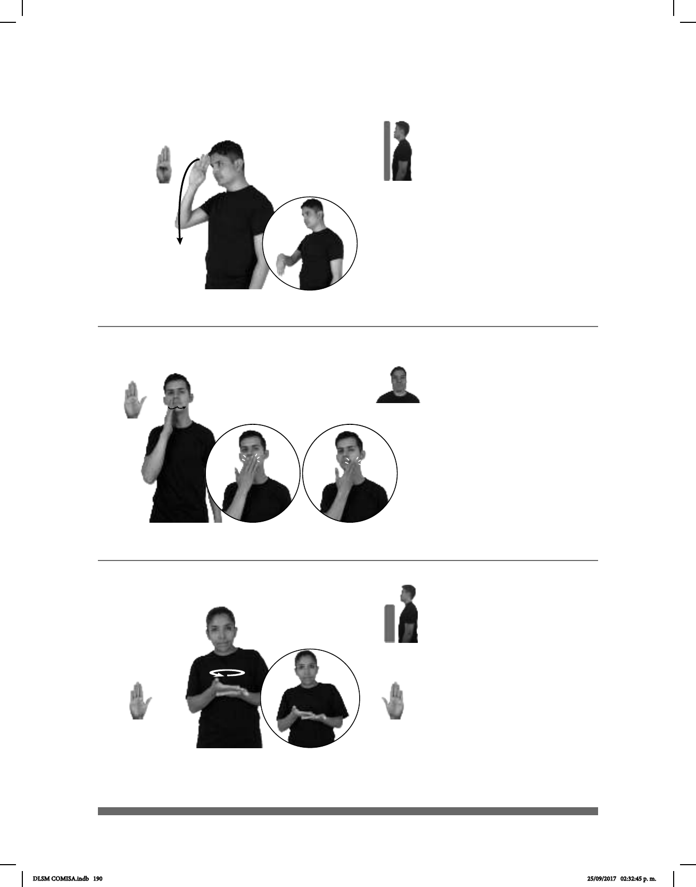

190
Seña: SM
B-P.1
La palma inicia
oblicua hacia la izquierda y hacia
abajo y termina hacia dentro.
De la frente a la ]
cintura.
Recto hacia abajo
mientras la mano se mueve de atrás
muñeca.
sust. f. Término de
cortesía que se aplica a una mujer
adulta.
Seña: SM
B-P.2
Palma hacia dentro.
Sobre la boca.
Los dedos simulan
varios saltos de derecha a izquierda.
Simula la acción
de limpiarse la boca.
sust. f. Pieza de tela o
papel que usa cada comensal para
limpieza de las manos y la boca.
(B-P 238) Señora
(B-P 239)
SEÑORA dm-MARÍA TENER COCINA
La señora María tiene una cocina.
ESTA SERVILLETA SUCIA
Esta servilleta está sucia.
Seña: SB
MD y MB B-P.2
MD y MB palmas
hacia arriba.
A la altura del pecho,
MD sobre MB.
La MD se mueve
formando círculos.
sust. f. Platillo,
generalmente líquido, que se hace
cociendo carne, verdura, pasta, etc.,
en agua.
(B-P 240) Sopa
SOPA CODITO pos-MI FAVORITO
La sopa de codito es mi favorita.
DLSM COMISA.indb 190 25/09/2017 02:32:45 p. m.